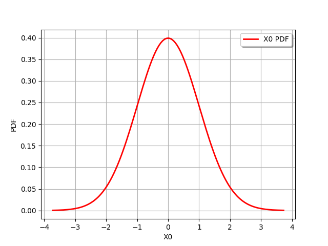
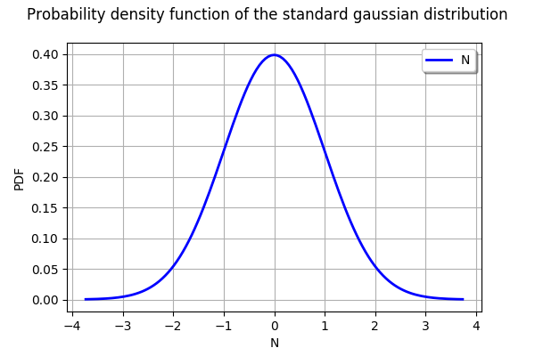
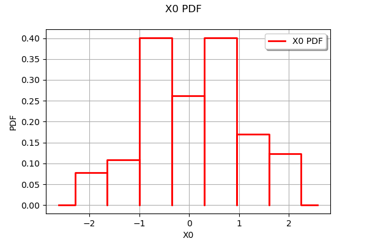
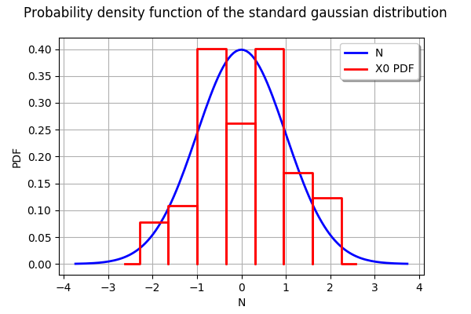
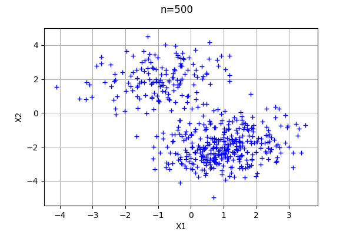
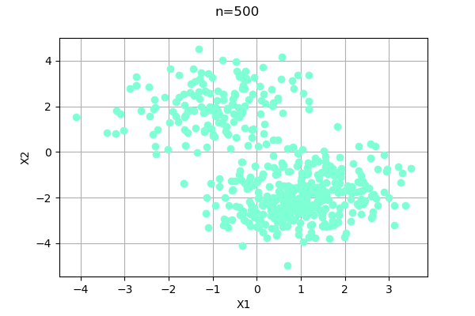
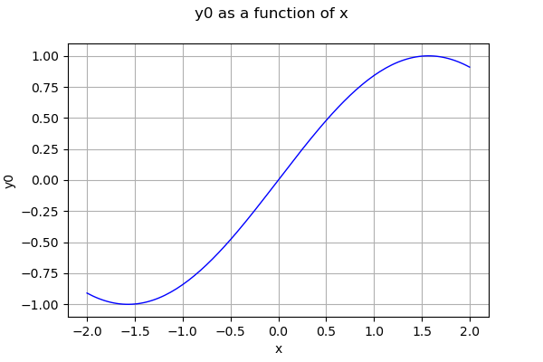
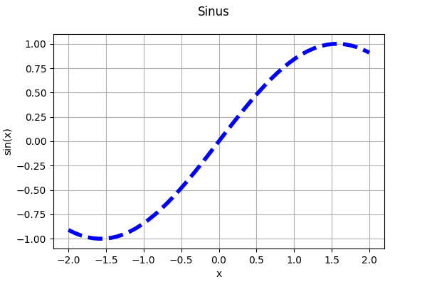
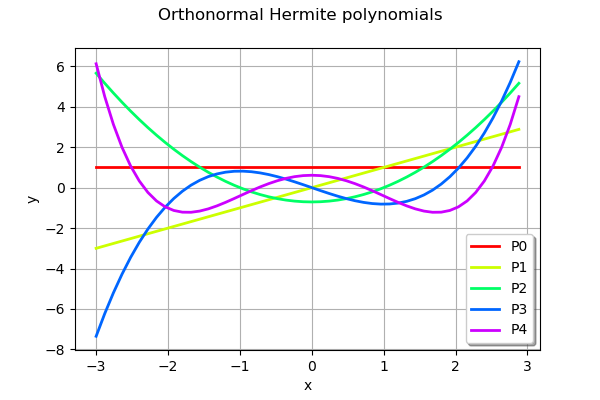
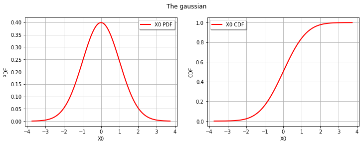

A quick start guide to graphs¶
In this example, we show how to create graphs. We show how to create and configure its axes and its colors. We show how to create a plot based on the combination of several plots.
The draw method the Graph class¶
The simplest way to create a graphics is to use the draw method. The Normal distribution for example provides a method to draw the density function of the gaussian distribution.
[1]:
import openturns as ot
[2]:
n = ot.Normal()
n
[2]:
Normal(mu = 0, sigma = 1)
[3]:
n.drawPDF()
[3]:

To configure the look of the plot, we can first observe the type of graphics returned by the drawPDF method returns: it is a Graph.
[4]:
graph = n.drawPDF()
type(graph)
[4]:
openturns.graph.Graph
The Graph class provides several methods to configure the legends, the title and the colors. Since a graphics can contain several sub-graphics, the setColors takes a list of colors as inputs argument: each item of the list corresponds to the sub-graphics.
[5]:
graph.setXTitle("N")
graph.setYTitle("PDF")
graph.setTitle("Probability density function of the standard gaussian distribution")
graph.setLegends(["N"])
graph.setColors(["blue"])
graph
[5]:

Combine several graphics¶
In order to combine several graphics, we can use the add method.
Let us create an empirical histogram from a sample.
[6]:
sample = n.getSample(100)
[7]:
histo = ot.HistogramFactory().build(sample).drawPDF()
histo
[7]:

Then we add the histogram to the graph with the add method. The graph then contains two plots.
[8]:
graph.add(histo)
graph
[8]:

Draw a cloud¶
The Cloud class creates clouds of bidimensional points. To demonstrate it, let us create two gaussian distributions in two dimensions.
[9]:
# Create a Funky distribution
corr = ot.CorrelationMatrix(2)
corr[0, 1] = 0.2
copula = ot.NormalCopula(corr)
x1 = ot.Normal(-1., 1)
x2 = ot.Normal(2, 1)
x_funk = ot.ComposedDistribution([x1, x2], copula)
[10]:
# Create a Punk distribution
x1 = ot.Normal(1.,1)
x2 = ot.Normal(-2,1)
x_punk = ot.ComposedDistribution([x1, x2], copula)
Let us mix these two distributions.
[11]:
mixture = ot.Mixture([x_funk, x_punk], [0.5,1.])
[12]:
n=500
sample = mixture.getSample(n)
[13]:
graph = ot.Graph("n=%d" % (n), "X1", "X2", True, '')
cloud = ot.Cloud(sample)
graph.add(cloud)
graph
[13]:

We sometimes want to customize the graphics by choosing the type of point (square, triangle, circle, etc…), of line (continuous, dashed, etc…) or another parameter. We can know the list of possible values with the corresponding getValid method.
For example, the following function returns the possible values of the PointStyle parameter.
[14]:
ot.Drawable.GetValidPointStyles()
[14]:
[bullet,circle,diamond,dot,fcircle,fdiamond,fsquare,ftriangleup,none,plus,square,star,times,triangledown,triangleup]#15
The following method returns the list of colors.
[15]:
ot.Drawable.GetValidColors()
[15]:
[aliceblue,antiquewhite,antiquewhite1,antiquewhite2,antiquewhite3,antiquewhite4,aquamarine,aquamarine1,aquamarine2,aquamarine3,aquamarine4,azure,azure1,azure2,azure3,azure4,beige,bisque,bisque1,bisque2,bisque3,bisque4,black,blanchedalmond,blue,blue1,blue2,blue3,blue4,blueviolet,brown,brown1,brown2,brown3,brown4,burlywood,burlywood1,burlywood2,burlywood3,burlywood4,cadetblue,cadetblue1,cadetblue2,cadetblue3,cadetblue4,chartreuse,chartreuse1,chartreuse2,chartreuse3,chartreuse4,chocolate,chocolate1,chocolate2,chocolate3,chocolate4,coral,coral1,coral2,coral3,coral4,cornflowerblue,cornsilk,cornsilk1,cornsilk2,cornsilk3,cornsilk4,cyan,cyan1,cyan2,cyan3,cyan4,darkblue,darkcyan,darkgoldenrod,darkgoldenrod1,darkgoldenrod2,darkgoldenrod3,darkgoldenrod4,darkgray,darkgreen,darkgrey,darkkhaki,darkmagenta,darkolivegreen,darkolivegreen1,darkolivegreen2,darkolivegreen3,darkolivegreen4,darkorange,darkorange1,darkorange2,darkorange3,darkorange4,darkorchid,darkorchid1,darkorchid2,darkorchid3,darkorchid4,darkred,darksalmon,darkseagreen,darkseagreen1,darkseagreen2,darkseagreen3,darkseagreen4,darkslateblue,darkslategray,darkslategray1,darkslategray2,darkslategray3,darkslategray4,darkslategrey,darkturquoise,darkviolet,deeppink,deeppink1,deeppink2,deeppink3,deeppink4,deepskyblue,deepskyblue1,deepskyblue2,deepskyblue3,deepskyblue4,dimgray,dimgrey,dodgerblue,dodgerblue1,dodgerblue2,dodgerblue3,dodgerblue4,firebrick,firebrick1,firebrick2,firebrick3,firebrick4,floralwhite,forestgreen,gainsboro,ghostwhite,gold,gold1,gold2,gold3,gold4,goldenrod,goldenrod1,goldenrod2,goldenrod3,goldenrod4,gray,gray0,gray1,gray10,gray100,gray11,gray12,gray13,gray14,gray15,gray16,gray17,gray18,gray19,gray2,gray20,gray21,gray22,gray23,gray24,gray25,gray26,gray27,gray28,gray29,gray3,gray30,gray31,gray32,gray33,gray34,gray35,gray36,gray37,gray38,gray39,gray4,gray40,gray41,gray42,gray43,gray44,gray45,gray46,gray47,gray48,gray49,gray5,gray50,gray51,gray52,gray53,gray54,gray55,gray56,gray57,gray58,gray59,gray6,gray60,gray61,gray62,gray63,gray64,gray65,gray66,gray67,gray68,gray69,gray7,gray70,gray71,gray72,gray73,gray74,gray75,gray76,gray77,gray78,gray79,gray8,gray80,gray81,gray82,gray83,gray84,gray85,gray86,gray87,gray88,gray89,gray9,gray90,gray91,gray92,gray93,gray94,gray95,gray96,gray97,gray98,gray99,green,green1,green2,green3,green4,greenyellow,grey,grey0,grey1,grey10,grey100,grey11,grey12,grey13,grey14,grey15,grey16,grey17,grey18,grey19,grey2,grey20,grey21,grey22,grey23,grey24,grey25,grey26,grey27,grey28,grey29,grey3,grey30,grey31,grey32,grey33,grey34,grey35,grey36,grey37,grey38,grey39,grey4,grey40,grey41,grey42,grey43,grey44,grey45,grey46,grey47,grey48,grey49,grey5,grey50,grey51,grey52,grey53,grey54,grey55,grey56,grey57,grey58,grey59,grey6,grey60,grey61,grey62,grey63,grey64,grey65,grey66,grey67,grey68,grey69,grey7,grey70,grey71,grey72,grey73,grey74,grey75,grey76,grey77,grey78,grey79,grey8,grey80,grey81,grey82,grey83,grey84,grey85,grey86,grey87,grey88,grey89,grey9,grey90,grey91,grey92,grey93,grey94,grey95,grey96,grey97,grey98,grey99,honeydew,honeydew1,honeydew2,honeydew3,honeydew4,hotpink,hotpink1,hotpink2,hotpink3,hotpink4,indianred,indianred1,indianred2,indianred3,indianred4,ivory,ivory1,ivory2,ivory3,ivory4,khaki,khaki1,khaki2,khaki3,khaki4,lavender,lavenderblush,lavenderblush1,lavenderblush2,lavenderblush3,lavenderblush4,lawngreen,lemonchiffon,lemonchiffon1,lemonchiffon2,lemonchiffon3,lemonchiffon4,lightblue,lightblue1,lightblue2,lightblue3,lightblue4,lightcoral,lightcyan,lightcyan1,lightcyan2,lightcyan3,lightcyan4,lightgoldenrod,lightgoldenrod1,lightgoldenrod2,lightgoldenrod3,lightgoldenrod4,lightgoldenrodyellow,lightgray,lightgreen,lightgrey,lightpink,lightpink1,lightpink2,lightpink3,lightpink4,lightsalmon,lightsalmon1,lightsalmon2,lightsalmon3,lightsalmon4,lightseagreen,lightskyblue,lightskyblue1,lightskyblue2,lightskyblue3,lightskyblue4,lightslateblue,lightslategray,lightslategrey,lightsteelblue,lightsteelblue1,lightsteelblue2,lightsteelblue3,lightsteelblue4,lightyellow,lightyellow1,lightyellow2,lightyellow3,lightyellow4,limegreen,linen,magenta,magenta1,magenta2,magenta3,magenta4,maroon,maroon1,maroon2,maroon3,maroon4,mediumaquamarine,mediumblue,mediumorchid,mediumorchid1,mediumorchid2,mediumorchid3,mediumorchid4,mediumpurple,mediumpurple1,mediumpurple2,mediumpurple3,mediumpurple4,mediumseagreen,mediumslateblue,mediumspringgreen,mediumturquoise,mediumvioletred,midnightblue,mintcream,mistyrose,mistyrose1,mistyrose2,mistyrose3,mistyrose4,moccasin,navajowhite,navajowhite1,navajowhite2,navajowhite3,navajowhite4,navy,navyblue,oldlace,olivedrab,olivedrab1,olivedrab2,olivedrab3,olivedrab4,orange,orange1,orange2,orange3,orange4,orangered,orangered1,orangered2,orangered3,orangered4,orchid,orchid1,orchid2,orchid3,orchid4,palegoldenrod,palegreen,palegreen1,palegreen2,palegreen3,palegreen4,paleturquoise,paleturquoise1,paleturquoise2,paleturquoise3,paleturquoise4,palevioletred,palevioletred1,palevioletred2,palevioletred3,palevioletred4,papayawhip,peachpuff,peachpuff1,peachpuff2,peachpuff3,peachpuff4,peru,pink,pink1,pink2,pink3,pink4,plum,plum1,plum2,plum3,plum4,powderblue,purple,purple1,purple2,purple3,purple4,red,red1,red2,red3,red4,rosybrown,rosybrown1,rosybrown2,rosybrown3,rosybrown4,royalblue,royalblue1,royalblue2,royalblue3,royalblue4,saddlebrown,salmon,salmon1,salmon2,salmon3,salmon4,sandybrown,seagreen,seagreen1,seagreen2,seagreen3,seagreen4,seashell,seashell1,seashell2,seashell3,seashell4,sienna,sienna1,sienna2,sienna3,sienna4,skyblue,skyblue1,skyblue2,skyblue3,skyblue4,slateblue,slateblue1,slateblue2,slateblue3,slateblue4,slategray,slategray1,slategray2,slategray3,slategray4,slategrey,snow,snow1,snow2,snow3,snow4,springgreen,springgreen1,springgreen2,springgreen3,springgreen4,steelblue,steelblue1,steelblue2,steelblue3,steelblue4,tan,tan1,tan2,tan3,tan4,thistle,thistle1,thistle2,thistle3,thistle4,tomato,tomato1,tomato2,tomato3,tomato4,turquoise,turquoise1,turquoise2,turquoise3,turquoise4,violet,violetred,violetred1,violetred2,violetred3,violetred4,wheat,wheat1,wheat2,wheat3,wheat4,white,whitesmoke,yellow,yellow1,yellow2,yellow3,yellow4,yellowgreen]#657
In the following graphics, we use the “aquamarine1” color with “fcircle” circles.
[16]:
graph = ot.Graph("n=%d" % (n), "X1", "X2", True, '')
cloud = ot.Cloud(sample)
cloud.setColor("aquamarine1")
cloud.setPointStyle("fcircle")
graph.add(cloud)
graph
[16]:

Configure the style of points and the thickness of a curve¶
Assume that we want to plot the sine curve from -2 to 2. The simplest way is to use the draw method of the function.
[17]:
g = ot.SymbolicFunction("x","sin(x)")
[18]:
g.draw(-2,2)
[18]:

I would rather get a dashed curve: let us search for the available line styles.
[19]:
ot.Drawable.GetValidLineStyles()
[19]:
[blank,solid,dashed,dotted,dotdash,longdash,twodash]
In order to use the Curve class, it will be easier if we have a method to generate a Sample containing points regularly spaced in an interval.
[20]:
def linearSample(xmin,xmax,npoints):
'''Returns a sample created from a regular grid
from xmin to xmax with npoints points.'''
step = (xmax-xmin)/(npoints-1)
rg = ot.RegularGrid(xmin, step, npoints)
vertices = rg.getVertices()
return vertices
[21]:
x = linearSample(-2,2,50)
y = g(x)
[22]:
graph = ot.Graph("Sinus","x","sin(x)",True)
curve = ot.Curve(x,y)
curve.setLineStyle("dashed")
curve.setLineWidth(4)
graph.add(curve)
graph
[22]:

Create colored curves¶
In some situations, we want to create curves with different colors. In this case, the following function generates a color corresponding to the indexCurve integer in a ensemble of maximumNumberOfCurves curves.
[23]:
def createHSVColor(indexCurve,maximumNumberOfCurves):
'''Create a HSV color for the indexCurve-th curve
from a sample with maximum size equal to maximumNumberOfCurves'''
color = ot.Drawable.ConvertFromHSV(indexCurve * 360.0/maximumNumberOfCurves, 1.0, 1.0)
return color
[24]:
pofa = ot.HermiteFactory()
[25]:
graph = ot.Graph("Orthonormal Hermite polynomials","x","y",True,"bottomright")
degreemax = 5
for k in range(degreemax):
pk = pofa.build(k)
curve = pk.draw(-3.,3.,50)
curve.setLegends(["P%d" % (k)])
curve.setColors([createHSVColor(k,degreemax)])
graph.add(curve)
graph
[25]:

Create matrices of graphics¶
The library does not has objects to create a grid of graphics. However, we can use the add_subplot function from Matplotlib.
Let us create two graphics of the PDF and CDF of the following gaussian distribution..
[26]:
n = ot.Normal()
myPDF = n.drawPDF()
myCDF = n.drawCDF()
[27]:
import pylab as pl
import openturns.viewer as otv
We create a figure with the figure function from Matplotlib, then we add two graphics with the add_subplot function. We use the viewer.View function to create the required Matplotlib object. Since we are not interested by the output of the View function, we use the dummy variable _ as output. The title is finally configured with suptitle.
[28]:
fig = pl.figure(figsize=(12, 4))
ax_pdf = fig.add_subplot(1, 2, 1)
_ = otv.View(myPDF, figure=fig, axes=[ax_pdf])
ax_cdf = fig.add_subplot(1, 2, 2)
_ = otv.View(myCDF, figure=fig, axes=[ax_cdf])
_ = fig.suptitle("The gaussian")
